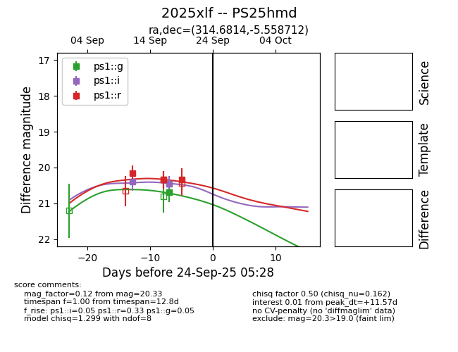
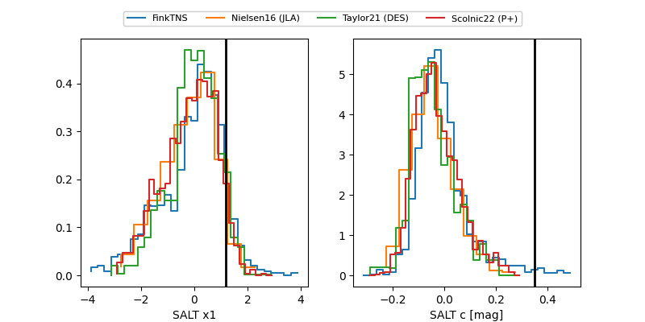

TNS: 2025xlf
YSE: 2025xlf
2025xlf (yse,tns)
PS25hmd (panstarrs)
equatorial (ra, dec) = (314.6814,-5.55871)
galactic (l, b) = (43.1927,-30.74620)


last ps1::g=20.69, ps1::i=20.45, ps1::r=20.33
2 ps1::g, 3 ps1::i, 4 ps1::r detections